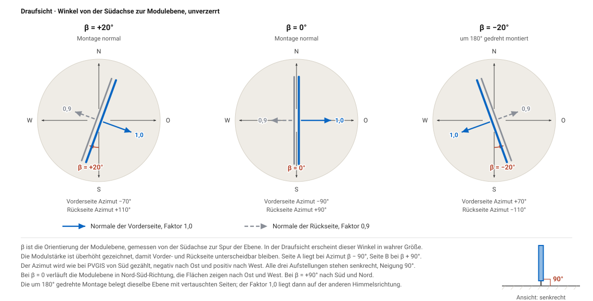
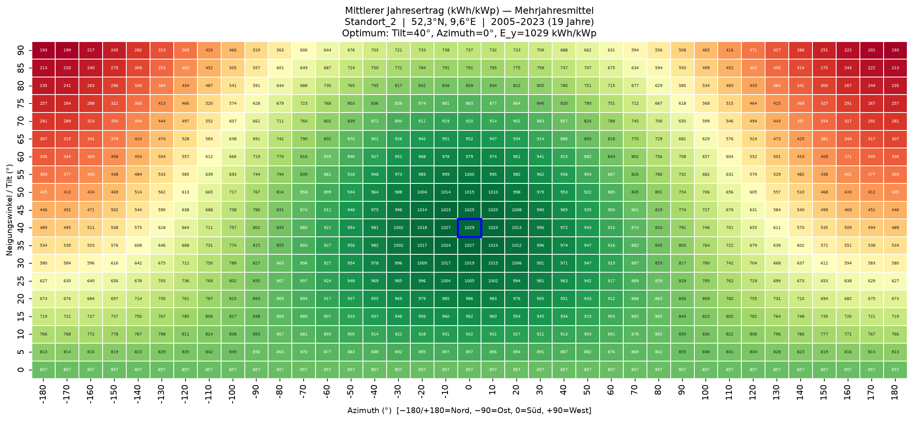
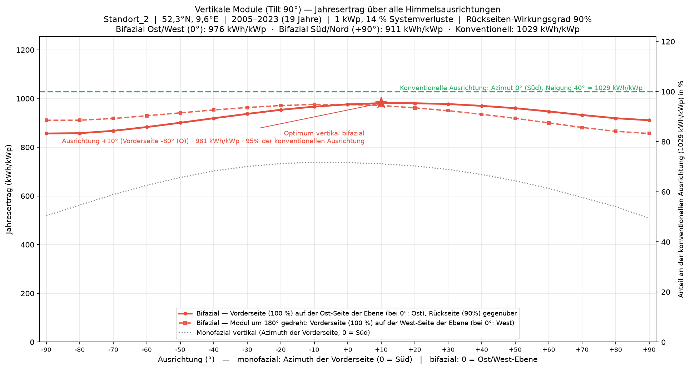
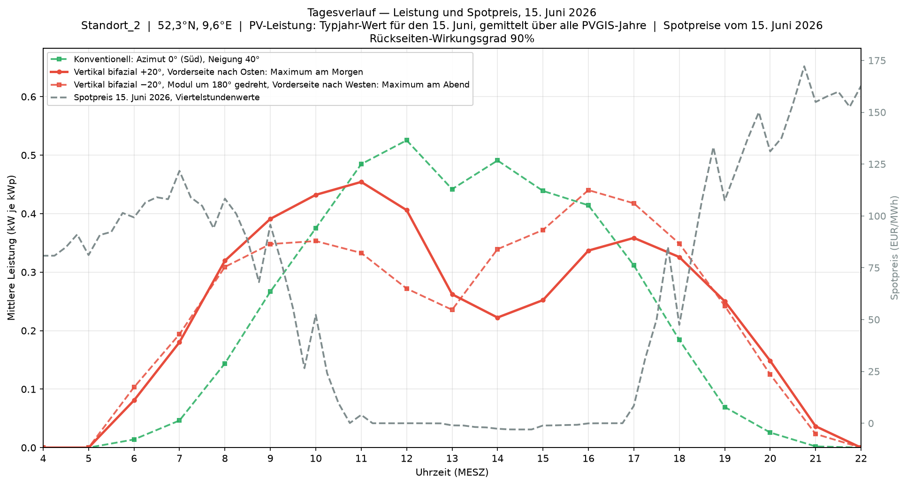
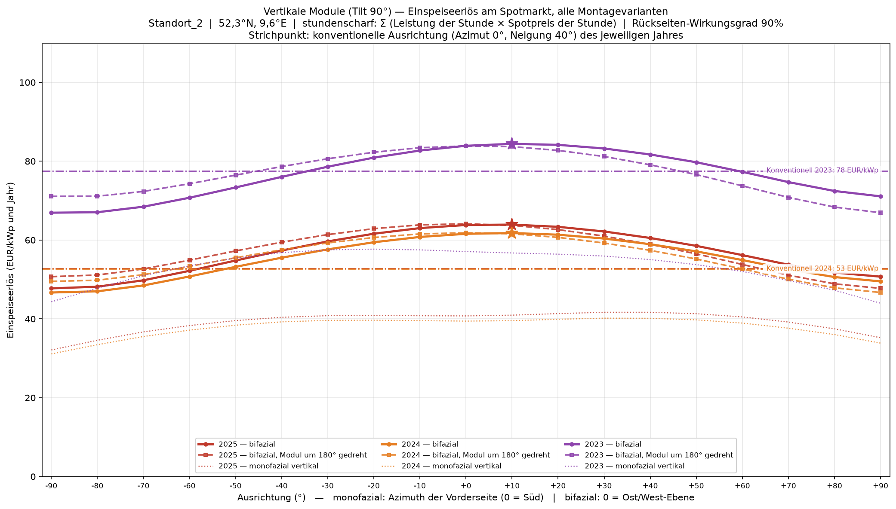
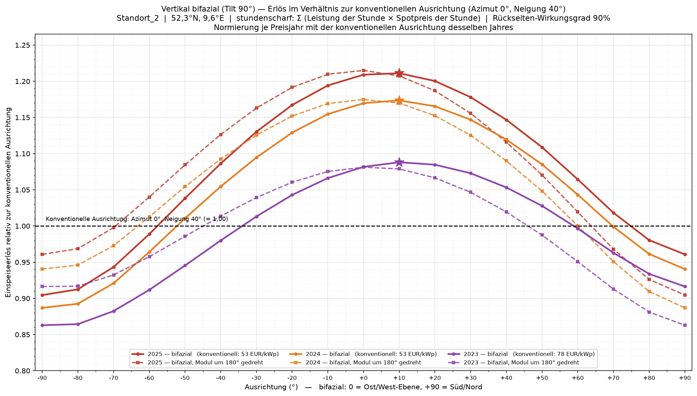
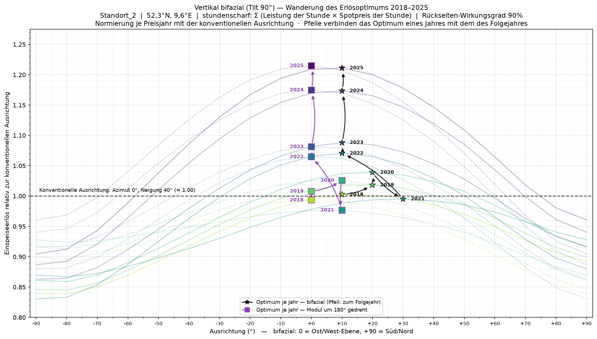

Folgebeitrag zu PV-Ausrichtung schnell richtig entscheiden. Dort ging es um Ertragsoptimierung durch die Ausrichtung von PV-Modulen. In diesem Beitrag kommt der Preis dazu, zu dem diese Kilowattstunden tatsächlich verkauft wurden, und welche neuen Schlüsse sich daraus ableiten lassen.
Die Ausrichtung einer Photovoltaikanlage wird üblicherweise so gewählt, dass der Jahresertrag möglichst hoch wird. In Norddeutschland führt das auf eine Südausrichtung mit 0° Azimut und 40° Neigung. Dieses Vorgehen ist dann richtig, wenn jede Kilowattstunde gleich viel wert ist. Bei fester Einspeisevergütung ist das der Fall.
Für Anlagen außerhalb der festen Vergütung gilt das nicht mehr. Dort ist der Strom nicht immer gleich viel wert; sein Preis entsteht aus Angebot und Nachfrage am Spotmarkt. Weil alle Solaranlagen gleichzeitig produzieren, ist der Preis oft gerade dann besonders niedrig, wenn die Sonne am höchsten steht. Damit wird die Frage nach der Ausrichtung neu gestellt: nicht mehr, wann am meisten Strom entsteht, sondern wann er am meisten wert ist.
Genau an diesem Punkt setzt ein Anlagenkonzept an: senkrecht aufgestellte bifaziale Module. Bifazial heißt, dass beide Seiten des Moduls Licht in Strom wandeln, nicht nur die Vorderseite. Bei einer zur Sonne geneigten Aufständerung bringt das wenig, weil die Rückseite zum Boden zeigt und lediglich Streulicht einfängt. Steht das Modul dagegen senkrecht, sind beide Seiten über den Tag hinweg nacheinander beleuchtet. Eine Ost-West-Ebene liefert dann morgens auf der einen und abends auf der anderen Seite Strom, mit einer Delle in der Mittagszeit. Genau in dieser Delle ist der Strom heute oft am wenigsten wert.
Dieser Beitrag prüft, was dieses Anlagenkonzept bringt. Erst wird der Jahresertrag betrachtet, dann der Erlös am Spotmarkt, und zuletzt die Entwicklung über die Preisjahre 2018 bis 2025.
Ertragsseite. Grundlage sind stündliche Zeitreihen der PVGIS API v5.3 der Europäischen Kommission für einen Standort in Norddeutschland bei 52,3°N und 9,6°E. Abgerufen wurden alle Kombinationen aus 19 Neigungswinkeln von 0 bis 90° und 37 Himmelsrichtungen von −180° bis +180°, jeweils über die Jahre 2005 bis 2023, normiert auf 1 kWp Nennleistung und 14 % Systemverluste. Aus diesen 19 Jahren wird ein Typjahr gebildet: für jede der 8.760 Stunden eines Jahres der Mittelwert über alle Jahre. Einzelne gute oder schlechte Wetterjahre fallen damit heraus. Die Zeitreihen sind modelliert, nicht gemessen: die Einstrahlung leitet PVGIS aus Meteosat-Satellitendaten ab (SARAH-3), Temperatur und Wind stammen aus der ERA5-Reanalyse, die Leistung rechnet ein Modul-Modell daraus. Verwendet wird dabei die PVGIS-Vorgabe für kristallines Silizium und freistehende Montage. Diese Vorgabe ist konservativ: neuere Modellfassungen und aktuelle Moduldatenblätter stellen die vertikale Aufstellung günstiger, nicht schlechter.
P̄(m, d, h) = 1/N · Σ P_y(m, d, h) über y = 2005 … 2023, N = 19
P̄ ist die mittlere Leistung der Jahresstunde (Monat m, Tag d, Stunde h, UTC) in kW je kWp, P_y der Wert dieser Stunde im Jahr y.
Preisseite. Die Day-Ahead-Spotpreise der deutschen Gebotszone stammen von der Energy-Charts-API des Fraunhofer ISE, die ihrerseits auf den SMARD-Daten der Bundesnetzagentur beruht. Sie liegen ab 2015 vor: bis September 2018 für die gemeinsame Gebotszone mit Österreich, danach für Deutschland und Luxemburg.
Verknüpfung. Der Erlös eines Jahres ist die Summe über alle Stunden aus der Leistung dieser Stunde mal dem Spotpreis derselben Stunde. Die Ertragsseite ist dabei immer dasselbe Typjahr, nur die Preise wechseln. Unterschiede im Erlös zwischen den Preisjahren stammen also ausschließlich aus dem Markt und nicht aus dem Wetter.
E(a) = Σ P̄_a,t · p_t über t = 1 … 8.760 [EUR/kWp]
E(a) ist der Jahreserlös der Ausrichtung a, P̄_a,t die Typjahr-Leistung der Stunde t in kW je kWp und p_t der Spotpreis derselben Stunde in EUR je kWh. Spotpreise werden in EUR/MWh veröffentlicht und dafür umgerechnet.
Vertikales bifaziales Modul. Ein vertikal aufgestelltes bifaziales Modul wird als Summe zweier gegenüberliegender Flächen gerechnet. Die Vorderseite geht mit vollem Wirkungsgrad ein, die Rückseite mit angenommenen 90 %. Da die Rückseite schwächer ist, ist es nicht gleichgültig, welche der beiden Himmelsrichtungen die starke Seite bekommt. Dasselbe Modul in derselben Ebene, nur um 180° gedreht montiert, ist deshalb ein eigener Fall und wird durchgehend mitgeführt.
E_bi(β) = E(90°, β − 90°) + 0,9 · E(90°, β + 90°)
β ist die Ausrichtung der Modulebene, E(90°, a) der Wert der senkrechten Einzelfläche mit Azimut a. Für die um 180° gedrehte Montage tauschen die beiden Summanden ihre Faktoren.
Ausrichtungsachse. Ein bifaziales Modul belegt immer zwei Modulebenen im Abstand von 180°. In den Abbildungen 3 bis 7 beschreibt die Abszisse die Orientierung der Modulebenen: bei 0° zeigt die Modulvorderseite nach Osten und die Modulrückseite nach Westen. Bei +90° zeigt die Modulvorderseite nach Süden und die Modulrückseite nach Norden. Bei 180° gedrehten Modulen sind Vorder- und Rückseite vertauscht. Die Ost-West-Ebene wurde als Nullpunkt gewählt, da sie für ein senkrecht montiertes bifaziales Modul am ehesten vergleichbar ist mit der 0°-Südausrichtung einer einseitigen Anlage. Sie sammelt Morgen- und Abendsonne spiegelbildlich zur Mittagsachse. Abbildung 1 zeigt diese Definition in der Draufsicht, in der der Winkel unverzerrt erscheint.

Referenz. Als Vergleichsmaßstab dient durchgehend die konventionelle Ausrichtung dieses Standorts: eine einseitige Anlage mit Azimut 0° nach Süden und 40° Neigung, also die Aufstellung mit dem höchsten Jahresertrag für monofaziale Module. Beim Ertrag ist das der stundenaufgelöste Mittelwert der 19 PVGIS-Jahre. Beim Erlös wird diese Ausrichtung wie jede andere gerechnet: dasselbe Typjahr, Stunde für Stunde mal den Spotpreisen des jeweiligen Preisjahres. Ertrags- und Erlösreferenz sind damit zwei verschiedene Kennzahlen derselben Aufstellung; beide stammen aus demselben Datensatz wie die vertikale Anlage und werden je Preisjahr neu gebildet.
Abbildung 2 zeigt den mittleren Jahresertrag für alle möglichen Ausrichtungskombinationen. Jede Kachel steht für eine Aufstellung, die Zeile gibt den Neigungswinkel, die Spalte die Himmelsrichtung. Die Ertragswerte sind Mittelwerte aus stündlichen Zeitreihen über 19 Jahre.
Das Maximum liegt bei 40° Neigung und Südausrichtung mit 1.029 kWh/kWp. Diese Aufstellung ist der übliche Auslegungsfall und dient im Folgenden durchgehend als Vergleichsmaßstab. Für diesen Beitrag zählt die oberste Zeile mit 90° Neigung, also die vertikale Aufstellung. Dort steht nach Süden 737 kWh/kWp, nach Osten 519 und nach Westen 508.
Diese Zeile enthält bereits alles, was für ein vertikales bifaziales Modul gebraucht wird. Jede Kachel beschreibt eine einseitige vertikale Fläche. Ein bifaziales Modul besteht aus zwei solchen Flächen im Abstand von 180°, die sich denselben Rahmen teilen. Sein Ertrag ist die Summe der beiden zugehörigen Orientierungen, wobei die Rückseite mit 90 % eingeht. Ein Modul mit der Vorderseite nach Osten kombiniert also die Kachel bei −90° mit der Kachel bei +90°, letztere lediglich zu 90 %.

Abbildung 3 führt diese Summenbildung aus Modulvorder- und Modulrückseite für alle Orientierungen aus. Die durchgezogene Kurve gilt für Module, deren Vorderseite bei 0° nach Osten und deren Rückseite nach Westen zeigt. Die gestrichelte Kurve stellt ein Modul dar, das um 180° gedreht montiert ist, also mit Vorder- und Rückseite vertauscht. Diese Unterscheidung durch die Linienart gilt in allen folgenden Abbildungen. Die grüne Linie ist die Referenz: sie zeigt die sonst übliche, nach dem Ertragsmaximum gewählte Ausrichtung dieses Standorts, also Azimut 0° nach Süden bei 40° Neigung aus Abbildung 2.
Beide bifazialen Kurven verlaufen flach und erreichen ihr Maximum dicht neben der Ost-West-Ebene. Die durchgezogene Kurve liegt mit 981 kWh/kWp bei +10° am höchsten, die gestrichelte mit 976 kWh/kWp bei −10°. Gegenüber der Referenz mit 1.029 kWh/kWp fehlen damit 4,6 %, die vertikale Aufstellung erreicht 95,4 % des Ertrages. Nach Kilowattstunden bewertet bleibt die konventionelle Ausrichtung vorteilhaft.

Kilowattstunden sind das richtige Maß, solange die Vergütung fest ist. Ohne feste Vergütung zählt, was der Strom in der Stunde seiner Erzeugung wert war. Und hier unterscheiden sich die beiden Konzepte deutlich, denn sie liefern zu verschiedenen Tageszeiten.
Abbildung 4 zeigt das am Beispiel des 15. Juni 2026. Neben der konventionellen Ausrichtung sind zwei vertikale Aufstellungen eingetragen, die bewusst gegenläufig ausgelegt sind. Die durchgezogene Kurve steht für eine Ebene bei +20° mit der starken Seite nach Osten, also auf maximalen Morgenertrag ausgelegt. Die gestrichelte steht für eine Ebene bei −20° mit dem Modul um 180° gedreht, die starke Seite zeigt nach Westen und liefert das Maximum am Abend. Beide Ausrichtungen liefern nahezu denselben Jahresertrag, sie unterscheiden sich nur darin, welche Tageshälfte die starke Seite bedient. Dazu kommt der Spotpreis dieses Tages in Viertelstundenauflösung. Die PV-Leistung entspricht dem Typjahresverlauf für diesen Kalendertag, die Preise sind die tatsächlichen.
Der Unterschied der beiden Orientierungen ist gut zu sehen. Die auf den Morgen ausgelegte Variante trifft an diesem Tag hohe Erträge und hohe Spotpreise am Vormittag, die auf den Abend ausgelegte Variante erreicht hohe Spotpreise nur über eine kürzere Zeitspanne. Besonders deutlich ist, dass die konventionelle Anlage an diesem Tag zwar hohe Erträge erzielt, wegen der niedrigen Spotpreise zur Mittagszeit aber den geringsten Erlös einfährt.
Für diesen einen Tag lässt sich das ausrechnen. Die konventionelle Ausrichtung erzeugt 4,23 kWh je kWp und erlöst damit 8,6 Cent. Beide vertikalen Aufstellungen erzeugen 4,46 kWh, also 5 % mehr, erlösen damit aber 19,6 beziehungsweise 19,2 Cent, also mehr als das Doppelte. Der Tag ist bewusst ein ausgeprägter Sommertag und nicht repräsentativ, er zeigt aber den Mechanismus, der sich im Jahresmittel abgeschwächt wiederfindet.

Rechnet man das für jede Stunde des Jahres für alle möglichen Orientierungen durch, entsteht Abbildung 5. Für jedes der drei Preisjahre 2023 bis 2025 gibt es eine Kurve, dazu die um 180° gedrehte Montage und die einseitige Variante. Die waagerechte Linie derselben Farbe ist der Erlös der konventionellen Ausrichtung im selben Jahr.
In allen drei Jahren verläuft die Kurve der vertikalen bifazialen Anlagen über einen weiten Bereich oberhalb der Referenzlinie konventioneller Anlagen. Eine Aufstellung, die nach Abbildung 3 rund 5 % weniger Strom erzeugt, bringt am Spotmarkt also mehr Geld ein. Der Grund steht in Abbildung 4: die fehlenden Kilowattstunden fehlen mittags, wenn wenig gezahlt wird, die zusätzlichen kommen morgens und abends dazu, wenn mehr gezahlt wird.

Die Erlösunterschiede werden besonders in der normierten Darstellung deutlich. Abbildung 6 teilt dafür den Erlös aller Ausrichtungen durch den Erlös, den die konventionelle Ausrichtung im selben Jahr erbracht hat. Die Linie bei 1,00 ist damit dieser Vergleichsfall, und jeder Abstand nach oben ist ein prozentualer Mehrerlös.
Für 2023 ließe sich sagen: eine vertikale Aufstellung mit der Vorderseite bei +10° hätte 8,8 % mehr Erlös gebracht als die nach dem Ertragsmaximum gewählte Ausrichtung. Für 2024 steigt dieser Wert auf 17,3 % und für 2025 auf 21,1 %. Weiter lässt sich sagen, dass 2025 der gesamte Bereich von −50° bis +70° einen höheren Erlös erbracht hat als die konventionelle Ausrichtung. Die genaue Lage des Maximums ist dagegen unkritisch, zwischen 0° und +20° liegen alle Werte innerhalb eines Prozents.

Im Weiteren wird ebenfalls der Trend der Vorjahre gezeigt. Abbildung 7 erweitert die Betrachtung auf die Preisjahre 2018 bis 2025 und kennzeichnet jeweils das Maximum und verbindet es mit dem des Folgejahres.
Der Mehrerlös wächst von +0,2 % im Jahr 2018 über +3,9 % im Jahr 2020 und +8,8 % im Jahr 2023 auf +21,1 % im Jahr 2025. Neben dem steigenden Vorteil der vertikalen bifazialen Anlagen zeigt der Pfad eine zweite Bewegung. Das Optimum liegt nicht bei der reinen Ost-West-Ebene, sondern durchgehend leicht in Richtung Süd-Nord gedreht, in den Jahren 2019 und 2020 bei +20°, seit 2022 bei +10°. Diese Drehung verschiebt die Erzeugung im Jahresmittel in Richtung Vormittag: bei +20° fallen 53,0 % der Jahresmenge vor 11 Uhr UTC an, bei 0° sind es 48,1 %. Dass das Optimum seit 2022 wieder näher an der symmetrischen Lage liegt, heißt entsprechend, dass die Abendstunden gegenüber den Vormittagsstunden an Wert gewonnen haben. Für die um 180° gedrehte Montage, im Bild die Quadrate, liegt das Optimum über fast alle Jahre unverändert bei 0°.

Der Befund lässt sich in einem Satz zusammenfassen: Vertikal aufgestellte bifaziale Module erreichen im statistischen Mittel nur 95,4 % des Ertrages der konventionellen, auf Ertrag optimierten Ausrichtung, erzielen am Spotmarkt aber in sieben der acht Jahre seit 2018 mehr Erlös, und der Abstand wächst: 2025 sind es 21,1 %.
Tabelle 1 stellt die Konzepte gegenüber. Für die vertikalen bifazialen Anlagen wurden +10° für die normale Montage und 0° für die um 180° gedrehte Montage gewählt. Beide Ausrichtungen stellen für den Zeitraum von 2018 bis 2025 jeweils die Orientierung mit dem höchsten Gesamterlös ihrer Montagerichtung dar.
| Jahr | Einspeiseerlös (EUR/kWp) | Mehrerlös gegenüber konventionell | |||
|---|---|---|---|---|---|
| konventionell | bifazial +10° | bifazial 0°, gedreht | +10° | 0°, gedreht | |
| 2018 | 45,30 | 45,41 | 45,00 | +0,2 % | −0,7 % |
| 2019 | 36,50 | 37,15 | 36,78 | +1,8 % | +0,8 % |
| 2020 | 26,85 | 27,84 | 27,52 | +3,7 % | +2,5 % |
| 2021 | 82,55 | 81,62 | 80,56 | −1,1 % | −2,4 % |
| 2022 | 227,34 | 243,34 | 242,06 | +7,0 % | +6,5 % |
| 2023 | 77,58 | 84,41 | 83,88 | +8,8 % | +8,1 % |
| 2024 | 52,65 | 61,78 | 61,85 | +17,3 % | +17,5 % |
| 2025 | 52,78 | 63,92 | 64,12 | +21,1 % | +21,5 % |
| Σ | 601,55 | 645,47 | 641,77 | +7,3 % | +6,7 % |
Eine Nebenbeobachtung betrifft die Frage, welche der beiden Montagerichtungen die bessere ist. Neben der Ausrichtung der Ebene entscheidet die Wahl der Modulvorderseite darüber, ob der Schwerpunkt der Erzeugung am Vormittag oder am Abend liegt. Tabelle 2 stellt je Jahr die Maxima beider Montagerichtungen aus Abbildung 7 gegenüber. 2021 wanderte das Optimum in Richtung Vormittag und lag mit +30° am weitesten dort; die gedrehte Montage hatte ihr Maximum bei +10°. Seither läuft die Bewegung zurück zur symmetrischen Ost-West-Ebene, seit 2022 liegt das Optimum bei +10° und 0°. Der Abend hat dabei gegenüber dem Vormittag an Wert gewonnen: 2021 lag die abendliche Preisspitze im Jahresmittel 13 % über der morgendlichen, 2025 waren es 26 %. Dazu passt, dass seit 2024 erstmals die um 180° gedrehte Montage mit der starken Seite nach Westen vorn liegt, wenn auch nur um 0,1 bis 0,3 %. Ob sich das fortsetzt, ist offen: Der Ausbau großer Batteriespeicher verschiebt Strom aus der Mittagsdelle in die Abendstunden und kann den Abstand zwischen beiden Tageshälften wieder verringern.
| Jahr | Erlösmaximum (EUR/kWp) | Differenz | |
|---|---|---|---|
| bifazial | 180° gedreht | ||
| 2018 | 45,41 | 45,00 | −0,91 % |
| 2019 | 37,16 | 36,78 | −1,02 % |
| 2020 | 27,90 | 27,55 | −1,27 % |
| 2021 | 82,14 | 80,63 | −1,84 % |
| 2022 | 243,34 | 242,06 | −0,53 % |
| 2023 | 84,41 | 83,88 | −0,63 % |
| 2024 | 61,78 | 61,85 | +0,12 % |
| 2025 | 63,92 | 64,12 | +0,32 % |